Beware the Ides
Apr. 5th, 2011 | 11:13 pm
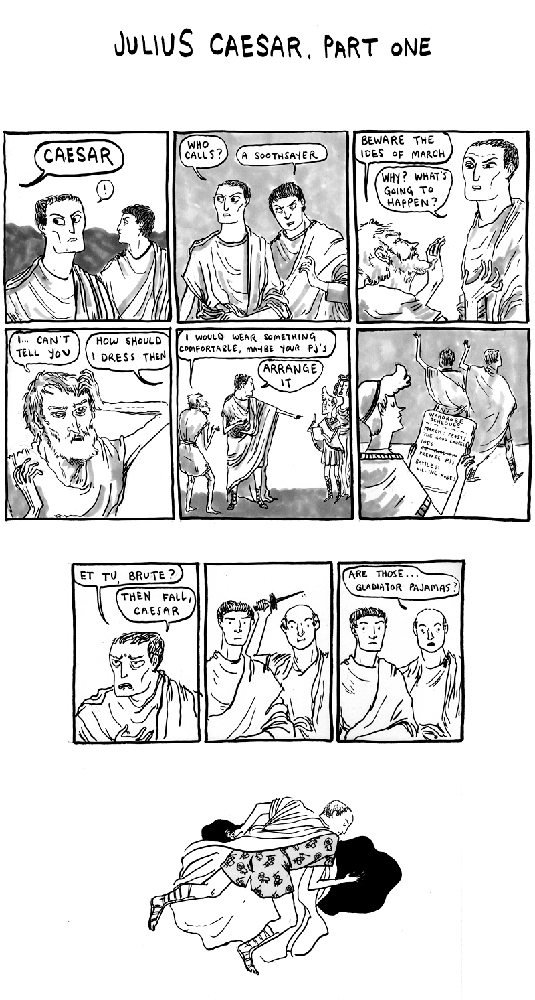
A guest comic! In a way. This update was written by my little sister, Laureen. She's a funny lady! She doesn't have a website, but you can follow her on twitter, she's @laureenbeat
I'm going to be at MoCCA Festival this weekend! Maybe I will see you there! I will be either at the Topatoco table or the Pizza Island table, but I'm just visiting this show in and out, it will be pretty laid back.
Speaking of Pizza Island, that is my studio, if you didn't know! We have a blog, right now there is a tour of everyone's desks up, mine was published yesterday! Take a look: Pizza Island! We were recently featured in New York Magazine. Pretty cool!
One more thing: I have a new interview up at Sequential Tart. Check it out!
A guest comic! In a way. This update was written by my little sister, Laureen. She's a funny lady! She doesn't have a website, but you can follow her on twitter, she's @laureenbeat
I'm going to be at MoCCA Festival this weekend! Maybe I will see you there! I will be either at the Topatoco table or the Pizza Island table, but I'm just visiting this show in and out, it will be pretty laid back.
Speaking of Pizza Island, that is my studio, if you didn't know! We have a blog, right now there is a tour of everyone's desks up, mine was published yesterday! Take a look: Pizza Island! We were recently featured in New York Magazine. Pretty cool!
One more thing: I have a new interview up at Sequential Tart. Check it out!
Link | Leave a comment {31} | Add to Memories | Share
Tiny Hermione
Mar. 28th, 2011 | 11:05 pm
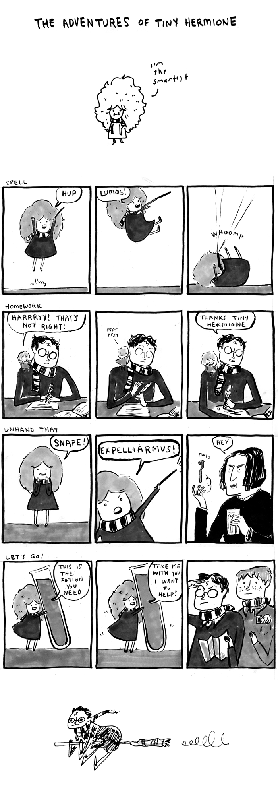
Just a silly little update for you, aww.
If you are looking for the real deal on Harry Potter cartoons, please look up a certain special madame, Emmy Cicierega.
Until next time, mes amis
Just a silly little update for you, aww.
If you are looking for the real deal on Harry Potter cartoons, please look up a certain special madame, Emmy Cicierega.
Until next time, mes amis
Link | Leave a comment {74} | Add to Memories | Share
odd couple
Mar. 17th, 2011 | 04:03 pm

Chopin! Liszt!
I wanted to get back into the world of composers because let's face it, they are Grade A comic material. Too bad I know relatively little about most of them. I went on a reading spree and came out with Chopin and Liszt, who were friends according to some and not friends according to others. Interesting fellows, never all that any one assessment claims they are. Chopin was not always a Delicate Flower and Liszt was not always some approximation of Jerry Lee Lewis playing Great Balls of Fire. But hey, sometimes they were!
How could I have left out Lisztomania or George Sand you ask? Well maybe you are asking. Comics for another time, my friends.
I made a little list of links down below on the main site, that's new! I probably should have done it ages ago.
My studio mates and I are doing a comics reading this Saturday, the 19th, in Brooklyn! We are looking forward to it, maybe we will see you there!
So, it is St Patrick's Day! Comics friend MK Reed wrote to me to tell you all about the launch of her new comic, which is very fitting for the day! Tain Bo Cuailnge is about Celtic warriors from Iron Age Ireland going to war over some cows. It updates a chapter a month.
Link | Leave a comment {101} | Add to Memories | Share
Comics by Japanese Kids
Mar. 11th, 2011 | 10:20 pm
I've been seeing this on twitter all day: people passing on the message that you can text REDCROSS to 90999 to make a $10 donation to help those affected by the earthquake in Japan and tsunami throughout the Pacific. I'd like to pass that message on as well, just in case. You can also go to the Red Cross online for more information.
When I heard about the earthquake the first thing I did was check to see if Korea was alright, because as you may remember, my friend Pete is there with his students. They are all fine.
Immediately after, I remembered that a reader who teaches in Japan saw that post and did the same comic exercise with her students. She sent me the results a few days ago. I google mapped the heck out of her location to see if they were ok. They are all ok.
But I'm going to show you her students' re-written comics, because you know, they weren't that far away. Heck, it could have been these students. Enjoy the comics (haha what's up with the random profanity in them?) and also, text up that Red Cross!
Special thanks to Lora, the teacher. And the kids.
( under the cut! )
When I heard about the earthquake the first thing I did was check to see if Korea was alright, because as you may remember, my friend Pete is there with his students. They are all fine.
Immediately after, I remembered that a reader who teaches in Japan saw that post and did the same comic exercise with her students. She sent me the results a few days ago. I google mapped the heck out of her location to see if they were ok. They are all ok.
But I'm going to show you her students' re-written comics, because you know, they weren't that far away. Heck, it could have been these students. Enjoy the comics (haha what's up with the random profanity in them?) and also, text up that Red Cross!
Special thanks to Lora, the teacher. And the kids.
( under the cut! )
Link | Leave a comment {105} | Add to Memories | Share
you betcha
Mar. 8th, 2011 | 12:26 am
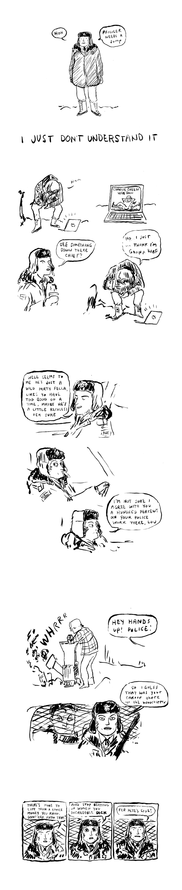
Well, if I can't make a good old fashioned comic update, I don't like leaving the site for too long without some kind of update! You know what that means, sketch comics time!
I saw Fargo for the first time the other day (I know right) and became totally enthralled by Marge Gunderson. I figure, you know, with all this Sheen nonsense going on these days there is only one person who can really sort it out.
Heck I even drew fan art while I watched the film. Oh Margie!
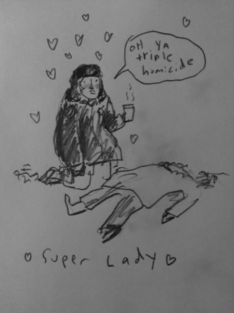

Say, did you know that today is International Women's Day? I'm going to pass a link on to you because there is no way I am updating on International Womens Day only with a comic featuring Charlie Sheen. So:
My favorite charity, Women for Women International, have a program where you can sponsor a woman in a war torn area for a year and help her rebuild her life. Now that's what I call celebrating! Meredith and I decided to sign up last month, and we should be getting more information really soon, and I tell you: I am pretty excited to see 27 dollars debited from my bank account every month.
hurrah!
Well, if I can't make a good old fashioned comic update, I don't like leaving the site for too long without some kind of update! You know what that means, sketch comics time!
I saw Fargo for the first time the other day (I know right) and became totally enthralled by Marge Gunderson. I figure, you know, with all this Sheen nonsense going on these days there is only one person who can really sort it out.
Heck I even drew fan art while I watched the film. Oh Margie!
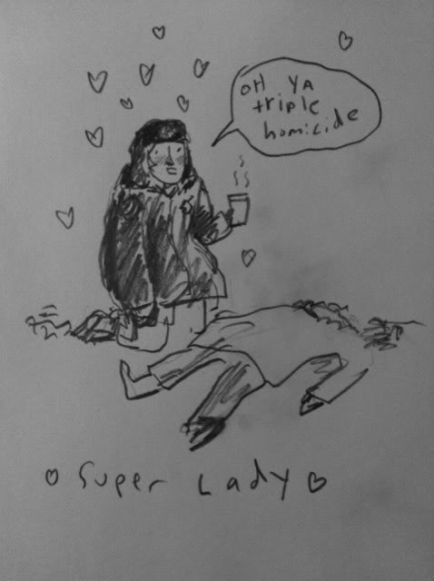
Say, did you know that today is International Women's Day? I'm going to pass a link on to you because there is no way I am updating on International Womens Day only with a comic featuring Charlie Sheen. So:
My favorite charity, Women for Women International, have a program where you can sponsor a woman in a war torn area for a year and help her rebuild her life. Now that's what I call celebrating! Meredith and I decided to sign up last month, and we should be getting more information really soon, and I tell you: I am pretty excited to see 27 dollars debited from my bank account every month.
hurrah!
Link | Leave a comment {85} | Add to Memories | Share
resolved in the midst and heat of the battle to live and die amongst you all
Feb. 24th, 2011 | 11:58 pm
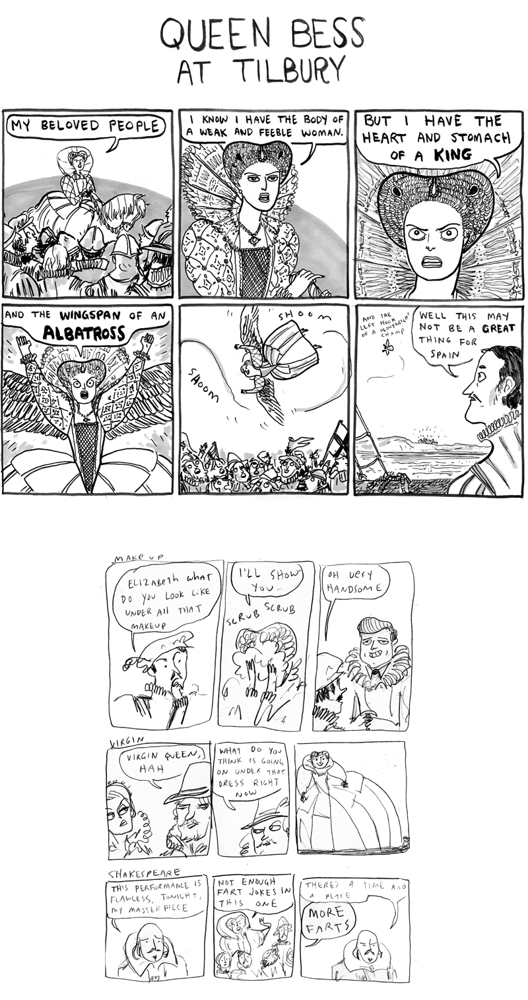
Happy 300th update! It doesn't really mean anything because not all the things in the archives are even comics. But anyway! Prints of this comic won't be sold with the bonus sketchies at the end.
Comic updates will continue to be at a slower pace while I work on my book. Me and my schedule woes, where are the violins? For lame occasions? It's not in the yellow pages.
I have a strange cast of reoccurring characters, and Good Queen Bess is one of them. Heck, in one of the earliest ones, she's already at Tilbury! I remember in the course of my being raised Catholic and Scottish and all (somewhere between the tartans and the endless mass, I recall) there was a distinct notion that Mary Queen of Scots rules and Elizabeth drools but who were we kidding? Elizabeth was terrifying and amazing and also especially terrifying (which is great). Anyway who can stay mad at a face like that?
A face caked with lead paint featuring an impossibly high hairline and black teeth. Why I feel a sonnet comin' on!
Say, would you guys do me a favor? Just a moment of your time if you like! Two good friends of mine have entered a contest looking for "The Coldest Canadian," (ha!) and the winner gets a very nice trip to New Zealand! Caleb and Larissa have lived up in Igoolik, Nunavut for quite some time, and they put together a super cute video.
You can see it here!
They sure do love it up there, we can't get them to come back, but all the same, it's cooollddd up there! They just got engaged and I think a celebratory warm trip would be so nice, so take a look (it closes soon oh no!), and vote if you agree! Thanks very much, what are internet powers but for helpin' folks?
And now here are some feral looking ladies I drew. I like them! They were lawyers, in my head. I hope I find a comic for them.
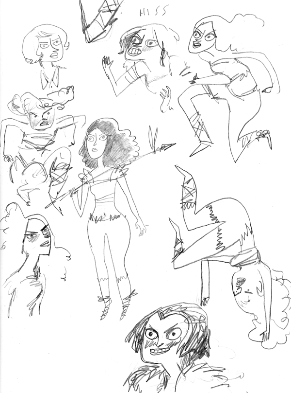
Happy 300th update! It doesn't really mean anything because not all the things in the archives are even comics. But anyway! Prints of this comic won't be sold with the bonus sketchies at the end.
Comic updates will continue to be at a slower pace while I work on my book. Me and my schedule woes, where are the violins? For lame occasions? It's not in the yellow pages.
I have a strange cast of reoccurring characters, and Good Queen Bess is one of them. Heck, in one of the earliest ones, she's already at Tilbury! I remember in the course of my being raised Catholic and Scottish and all (somewhere between the tartans and the endless mass, I recall) there was a distinct notion that Mary Queen of Scots rules and Elizabeth drools but who were we kidding? Elizabeth was terrifying and amazing and also especially terrifying (which is great). Anyway who can stay mad at a face like that?
A face caked with lead paint featuring an impossibly high hairline and black teeth. Why I feel a sonnet comin' on!
Say, would you guys do me a favor? Just a moment of your time if you like! Two good friends of mine have entered a contest looking for "The Coldest Canadian," (ha!) and the winner gets a very nice trip to New Zealand! Caleb and Larissa have lived up in Igoolik, Nunavut for quite some time, and they put together a super cute video.
You can see it here!
They sure do love it up there, we can't get them to come back, but all the same, it's cooollddd up there! They just got engaged and I think a celebratory warm trip would be so nice, so take a look (it closes soon oh no!), and vote if you agree! Thanks very much, what are internet powers but for helpin' folks?
And now here are some feral looking ladies I drew. I like them! They were lawyers, in my head. I hope I find a comic for them.
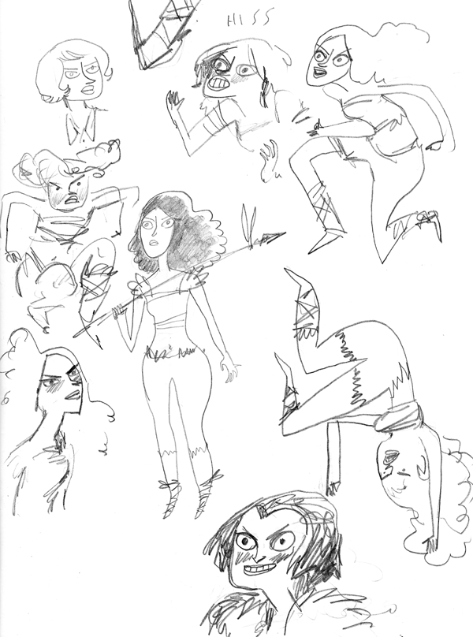
Link | Leave a comment {87} | Add to Memories | Share
Nancy-tines
Feb. 14th, 2011 | 03:40 pm
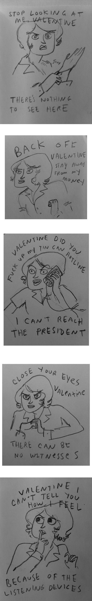
Happy Valentines Day, from my sketchbook, and Crazy Nancy
Happy Valentines Day, from my sketchbook, and Crazy Nancy
Link | Leave a comment {61} | Add to Memories | Share
A Lovelace Update Without a Babbage
Feb. 11th, 2011 | 01:43 pm
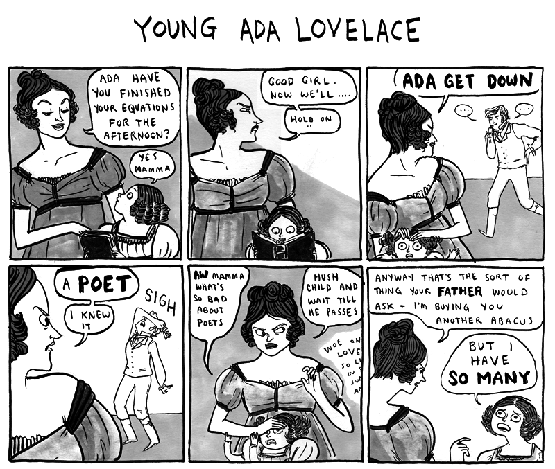
Poor young Ada. The vices of poetry were all around, and within her very blood! If I were the Lady Isabella and had to deal with Lord Bryon swinging dark moods around the house and swinging what was in his pants around every human female I might have a bad opinion of "the Arts" as well. Isabella was a bit of of a whiz with a protractor herself anyway, we are told.
Later of course, Ada became famous for doing some computery things with Charles Babbage, the mechanics of their work on the Analytical Engine being something I still don't completely grasp, probably because my parents seemed not to mind if I read a poem now and then. Thus, no doubt: my mathematical ruin.
So it all worked out for the best in a way, especially if someone turning to you and saying "did you know the first computer programmer was totally hot??" is your idea of "in a way." Ada Lovelace: first computer programmer, hot, questionable taste in headwear.
I've updated the "About" section with some more detail and FAQ's.
some more things:
I cannot mention Lovelace and Babbage without linking to Sydney's wonderful comic, The Thrilling Adventures of Lovelace and Babbage.
If you're not reading Three Word Phrase, you oughta be.
Because of Jules Verne's birthday, and this link being on Drawn, I have been forwarded this several times! (I follow Drawn too). But still, these Verne illustrations are so worth a look.
To one-up you, because it's sort of Verne-esque, Steve Wolfhard showed me this the other day, a collection of art by Newfoundland artist David Blackwood. Stunning, haunting, very very beautiful.
One more: Pete wanted you to know the names of the students who wrote these charmers. A group of 5 girls did all the comics, their self-chosen English names are Gloria, Jenny, Harry, Tomboy and Goldfish. Thanks guys! And credit where credit is due, folks!
Poor young Ada. The vices of poetry were all around, and within her very blood! If I were the Lady Isabella and had to deal with Lord Bryon swinging dark moods around the house and swinging what was in his pants around every human female I might have a bad opinion of "the Arts" as well. Isabella was a bit of of a whiz with a protractor herself anyway, we are told.
Later of course, Ada became famous for doing some computery things with Charles Babbage, the mechanics of their work on the Analytical Engine being something I still don't completely grasp, probably because my parents seemed not to mind if I read a poem now and then. Thus, no doubt: my mathematical ruin.
So it all worked out for the best in a way, especially if someone turning to you and saying "did you know the first computer programmer was totally hot??" is your idea of "in a way." Ada Lovelace: first computer programmer, hot, questionable taste in headwear.
{kind=link}
I've updated the "About" section with some more detail and FAQ's.
some more things:
I cannot mention Lovelace and Babbage without linking to Sydney's wonderful comic, The Thrilling Adventures of Lovelace and Babbage.
If you're not reading Three Word Phrase, you oughta be.
Because of Jules Verne's birthday, and this link being on Drawn, I have been forwarded this several times! (I follow Drawn too). But still, these Verne illustrations are so worth a look.
To one-up you, because it's sort of Verne-esque, Steve Wolfhard showed me this the other day, a collection of art by Newfoundland artist David Blackwood. Stunning, haunting, very very beautiful.
One more: Pete wanted you to know the names of the students who wrote these charmers. A group of 5 girls did all the comics, their self-chosen English names are Gloria, Jenny, Harry, Tomboy and Goldfish. Thanks guys! And credit where credit is due, folks!
Link | Leave a comment {52} | Add to Memories | Share
A Power Suit Update
Feb. 3rd, 2011 | 04:30 pm
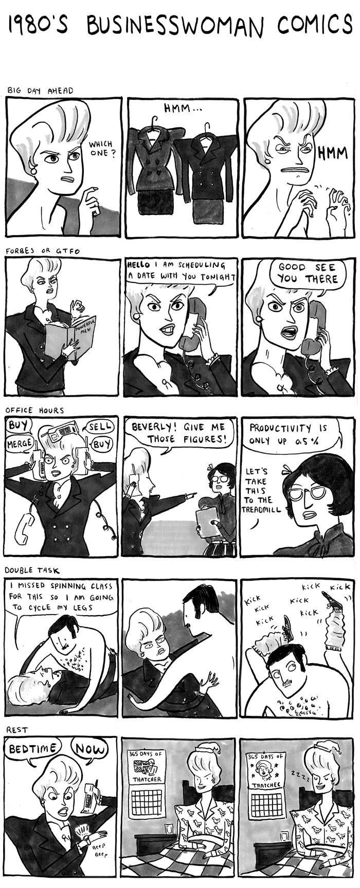
I think these comics are mostly the product of my childhood understanding of business ladies. You see, I was born in the 1980's, when images of boxy shouldered, helmet haired, red lipstick wearing women were striding across magazines and tv shows in giant heels, and I guess they inserted themselves to the pantheon of jobs you one day figured you could have. You know, Nurse, Princess, Teacher, Businesswoman. The following is what I gathered from the images I was familiar with. That these women:
1- Did business All The Time
2- If they were not doing business they were probably exercising.
Pretty fierce, but also, it kind of rules. Anyway you may remember from the archives that I have a ...healthy interest in this sort of thing.
Some items:
The people from Line of Best Fit dropped me a note to say that if you liked that free Christmas album downloaddisabled I linked to a few weeks ago, you will probably enjoy this new free album downloaddisabled! I know I did. My friend Fred has a song in there too. A bonus!
I recently read Julie Klausner's book I Don't Care About Your Band. I really liked it, you may also! You should look into it!
Last update, I linked to my tumblr, and you should know that my friend who set it up for me has a tumblr also. And what a tumblr. The Number One Tumblr, if you will (I will).
I think these comics are mostly the product of my childhood understanding of business ladies. You see, I was born in the 1980's, when images of boxy shouldered, helmet haired, red lipstick wearing women were striding across magazines and tv shows in giant heels, and I guess they inserted themselves to the pantheon of jobs you one day figured you could have. You know, Nurse, Princess, Teacher, Businesswoman. The following is what I gathered from the images I was familiar with. That these women:
1- Did business All The Time
2- If they were not doing business they were probably exercising.
Pretty fierce, but also, it kind of rules. Anyway you may remember from the archives that I have a ...healthy interest in this sort of thing.
Some items:
The people from Line of Best Fit dropped me a note to say that if you liked that free Christmas album downloaddisabled I linked to a few weeks ago, you will probably enjoy this new free album downloaddisabled! I know I did. My friend Fred has a song in there too. A bonus!
I recently read Julie Klausner's book I Don't Care About Your Band. I really liked it, you may also! You should look into it!
Last update, I linked to my tumblr, and you should know that my friend who set it up for me has a tumblr also. And what a tumblr. The Number One Tumblr, if you will (I will).
Link | Leave a comment {97} | Add to Memories | Share
Too Good
Jan. 28th, 2011 | 10:48 pm
My friend Pete is teaching English in Korea, and had his students fill in some comics. They are too much fun for me not to post. Hey Pete!
( these kids have a future in the business )
( these kids have a future in the business )